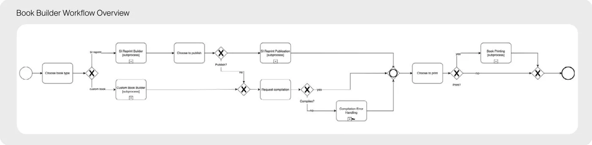
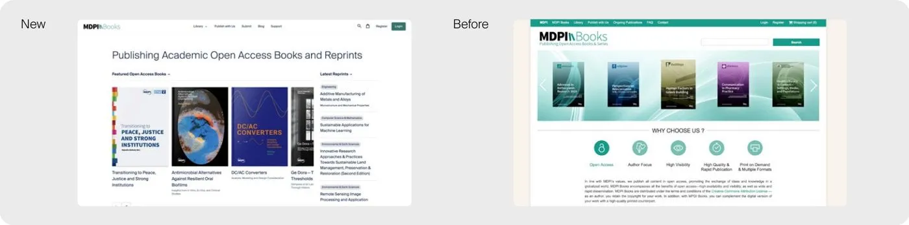
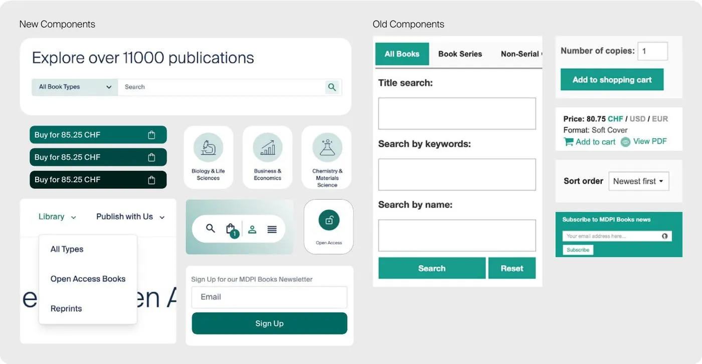

Context
MDPI Books is the publisher’s platform for open access academic books and reprints. The Books team asked me to redesign it to grow traffic.
There was no design or UX role on the team yet. They had taken the redesign on alongside their daily work and expected a visual refresh. Early research turned it into a strategic project.
Problem
People came looking for books and left without finding them.
The analytics matched: a 60.5% bounce rate and a 0.87% conversion rate. Meanwhile the team spent its time answering avoidable support emails instead of building.
Research & process
I started by asking the team what they believed the problems were. Then I ran 7 moderated interviews with academics and researchers, MDPI Books’ real audience, to test those assumptions. The findings brought the team together around one hypothesis: a more visual, structured site would drive traffic.
- Research7 interviews with academics and researchers
- Low-fidelity wireframesFirst structural drafts
- AlignmentCross-country stakeholder workshop
- High-fidelity prototypeInteractive prototype, tested with colleagues
- Front-End handoverEmbedded weekly with the Front-End team
- LaunchSEO and marketing rollout

Key decisions
Browse by subject before search
7 of 7 couldn’t find books and 5 of 7 had no time to browse. So discovery pages were mapped directly to what people were looking for, with subject entry points on the first screen.
Test with colleagues, not a second external round
The budget didn’t allow another round of external interviews. I tested the prototype with colleagues outside the project team and traded some ecological validity for speed.
Move my desk to the Front-End team
I sat with the developers, followed their builds in weekly streams and ran weekly group sessions, so design and implementation stayed aligned as the component system grew.
Solution
- Reorganised page structure around discovery
- New discovery pages mapped to what users couldn’t find
- A streamlined payment flow
- Unified components replacing one-off forms and buttons


Impact
Within six months of launch, traffic tripled and drop-off fell from 80% to 15%.
Marketing supported the launch with SEO and confirmed the numbers. Support emails dropped after the relaunch, and the CTO called it a very good website. The clearest signal came from Marketing: Books climbed from the 4th to the 2nd most visited page on MDPI and grew into its second-highest revenue product.
Reflection
Next time I’d plan budget for one round of external testing on the high-fidelity prototype. Colleagues gave fast feedback, but researchers would have caught edge cases earlier.